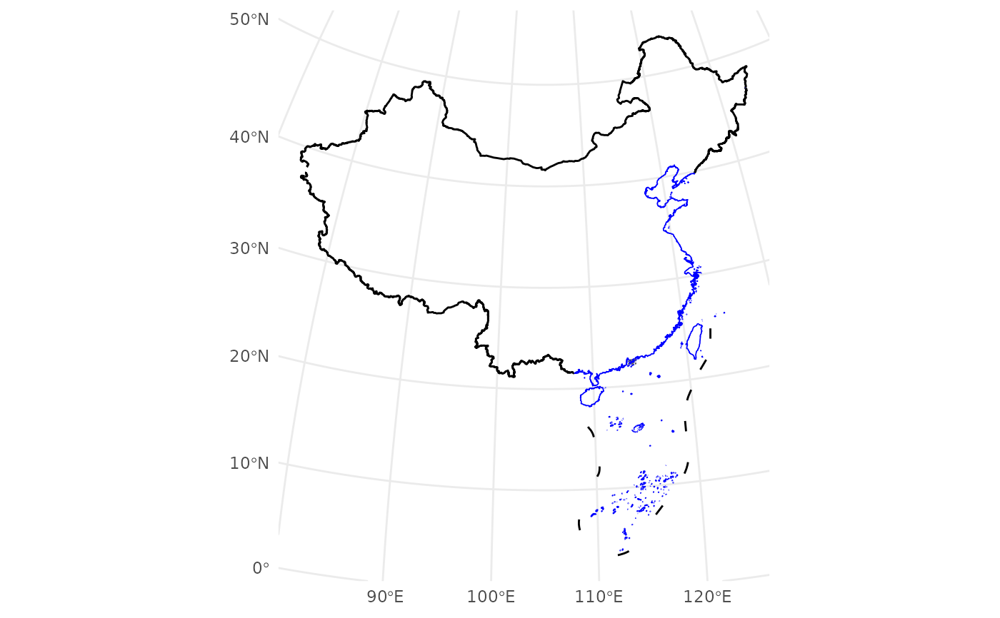
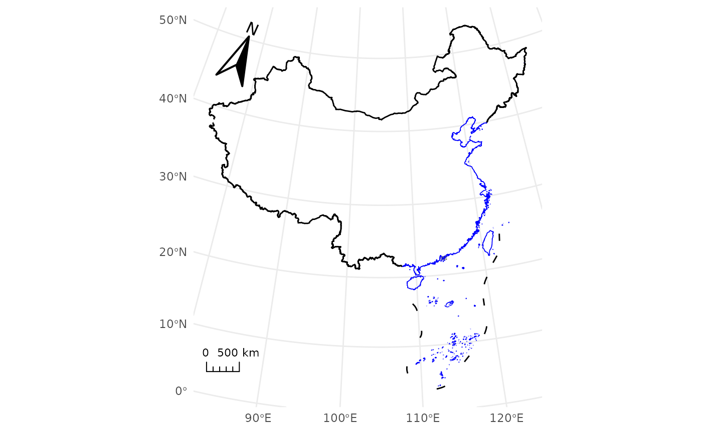

Draw China's administrative boundaries and optional map decorations (compass and scale bar). Each boundary category (mainland, coastline, provinces, etc.) can be styled independently. The boundary data are reprojected to the specified CRS before plotting.
Usage
geom_boundary_cn(
crs = "+proj=aeqd +lat_0=35 +lon_0=105 +ellps=WGS84 +units=m +no_defs",
compass = FALSE,
scale = FALSE,
mainland_color = "black",
mainland_size = 0.2,
mainland_linetype = "solid",
coastline_color = "blue",
coastline_size = 0.1,
coastline_linetype = "solid",
ten_segment_line_color = "black",
ten_segment_line_size = 0.2,
ten_segment_line_linetype = "solid",
SAR_boundary_color = "grey40",
SAR_boundary_size = 0.1,
SAR_boundary_linetype = "dashed",
undefined_boundary_color = "black",
undefined_boundary_size = 0.2,
undefined_boundary_linetype = "dotdash",
province_color = "transparent",
province_size = 0.1,
province_linetype = "solid",
...
)Arguments
- crs
Character or `sf::crs`. Target coordinate reference system for plotting. Defaults to an azimuthal equidistant projection centered on China (`+proj=aeqd +lat_0=35 +lon_0=105 +ellps=WGS84 +units=m +no_defs`).
- compass
Logical. If `TRUE`, add a compass pointing to true north in the top-left corner. Default: `FALSE`.
- scale
Logical. If `TRUE`, add a scale bar in the bottom-left corner. Default: `FALSE`.
- mainland_color
Character. Line color for the mainland boundary. Default: `"black"`.
- mainland_size
Numeric. Line width for the mainland boundary. Default: `0.2`.
- mainland_linetype
Character. Line type for the mainland boundary. Default: `"solid"`.
- coastline_color
Character. Line color for coastlines. Default: `"blue"`.
- coastline_size
Numeric. Line width for coastlines. Default: `0.1`.
- coastline_linetype
Character. Line type for coastlines. Default: `"solid"`.
- ten_segment_line_color
Character. Line color for the South China Sea ten-segment line. Default: `"black"`.
- ten_segment_line_size
Numeric. Line width for the ten-segment line. Default: `0.2`.
- ten_segment_line_linetype
Character. Line type for the ten-segment line. Default: `"solid"`.
- SAR_boundary_color
Character. Line color for Hong Kong and Macau SAR boundaries. Default: `"grey40"`.
- SAR_boundary_size
Numeric. Line width for SAR boundaries. Default: `0.1`.
- SAR_boundary_linetype
Character. Line type for SAR boundaries. Default: `"dashed"`.
- undefined_boundary_color
Character. Line color for undefined or disputed boundaries. Default: `"black"`.
- undefined_boundary_size
Numeric. Line width for undefined boundaries. Default: `0.2`.
- undefined_boundary_linetype
Character. Line type for undefined boundaries. Default: `"dotdash"`.
- province_color
Character. Line color for provincial boundaries. Default: `"transparent"`.
- province_size
Numeric. Line width for provincial boundaries. Default: `0.1`.
- province_linetype
Character. Line type for provincial boundaries. Default: `"solid"`.
- ...
Additional arguments passed to `ggplot2::geom_sf()` (e.g., `alpha`).
Value
A list of `ggplot2` layers. If the boundary dataset cannot be obtained, an empty list is returned.
Examples
# Example 1: Basic China map
ggplot() +
geom_boundary_cn() +
theme_minimal()

# Example 2: Add compass and scale bar (easy mode)
ggplot() +
geom_boundary_cn(compass = TRUE, scale = TRUE) +
theme_minimal()
# Example 3: Custom styling
ggplot() +
geom_boundary_cn(
coastline_color = "steelblue",
province_color = "grey70",
province_linetype = "dashed"
) +
theme_minimal()
# Example 4: Advanced usage with a custom projected CRS (Albers)
albers_cn <- "+proj=aea +lat_1=25 +lat_2=47 +lat_0=0 +lon_0=105 +datum=WGS84 +units=m +no_defs"
ggplot() +
geom_boundary_cn(crs = albers_cn) +
annotation_compass(location = "tl", which_north = "true") +
annotation_scalebar(location = "bl", fixed_width = 500000, display_unit = "km") +
coord_sf(crs = albers_cn) +
theme_minimal()
